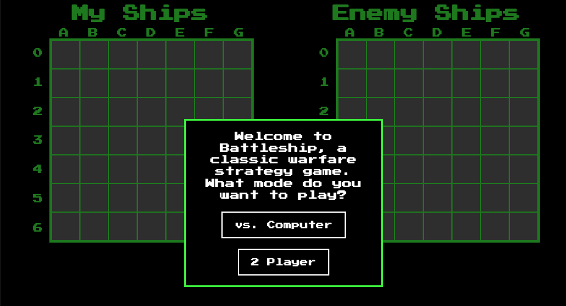

Battleship Game

Project Summary
Student work from The Odin Project to implement Jest for Javascript testing, as well as drag and drop events and basic computer player logic.
Audience
The audience for this game needs to interact with the gameboard through use of mouse or mobile touch interaction and through keyboard interaction. It is not accessible via screen reader or keyboard only use. It is intended for sighted users.
Details
The purpose of this project in the curriculum was to implement Jest for unit testing to set up the initial game logic before building DOM elements.
After successfully initiating the game via testing, I layered in the DOM components, going for a classic arcade font and dark mode style contrast between text and background.
Users can play against a computer or another player via two-player mode. The game interface for two-player mode includes a "pass screen" modal to hide the player boards from each other and therefore allow fair play from one device.
In either mode, human players place their ships one by one using drag and drop methods. If a player tries to illegally place a ship, for example in a direction that will run off the board, that specific ship placement resets.
Players make attacks by clicking on the enemy board in the interface. Misses, hits, sunk ships, and the game end are signaled through the modal and with color and icon changes on the enemy gameboard. Received attacks are similarly designated with changes to the cells on the player's board.
The computer player has simple logic that reads from the previous successful hit and attempts an attack on an adjacent cell. If the last hit sunk a ship or there is no previous successful attack, the computer makes a random attack.
Future improvements to this game would include keyboard accessibility and more refined computer logic that reads from an array of last successful hits to complete a line and fully sink a ship when the first hit is in the middle of the craft.